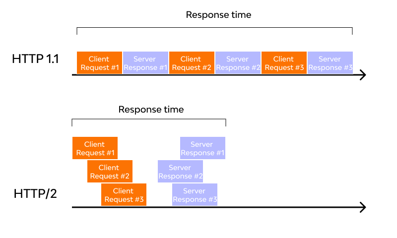
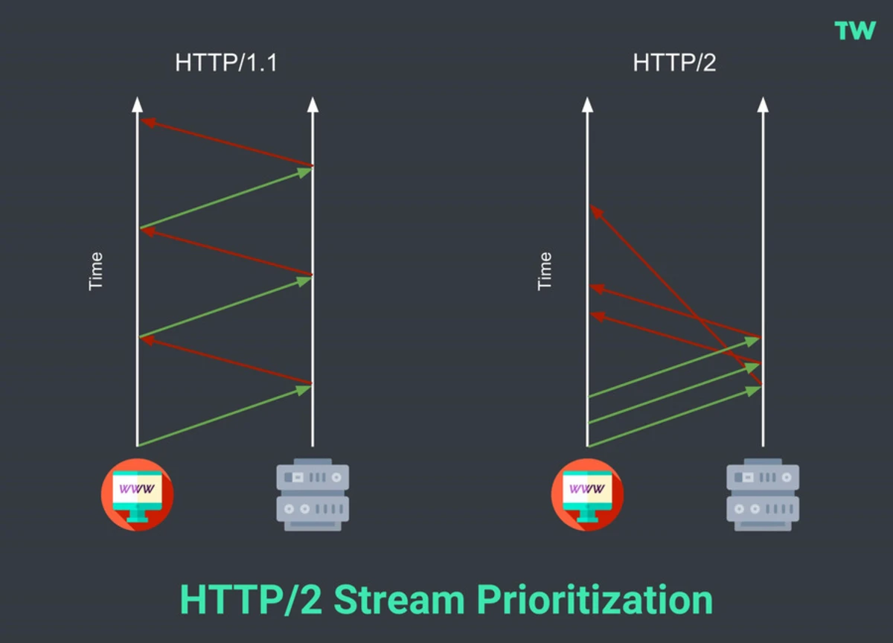
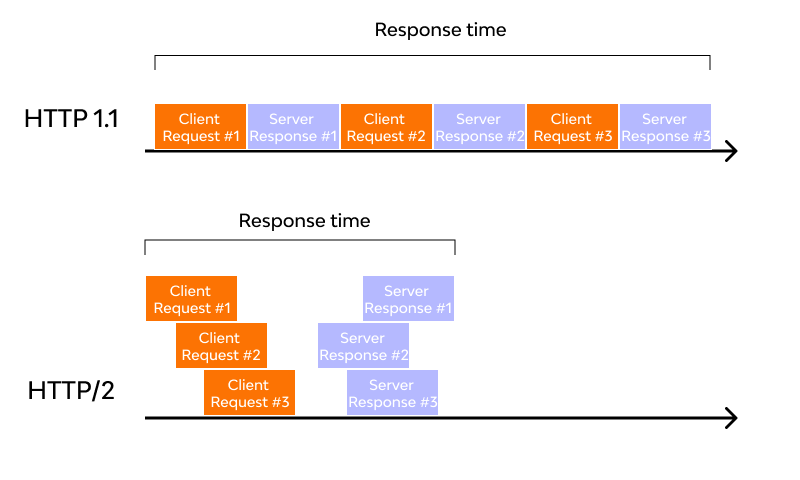
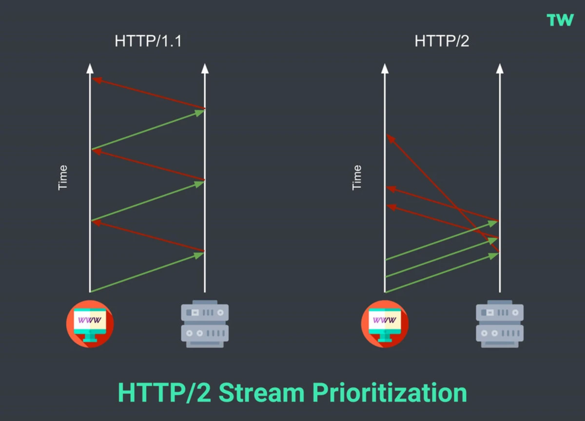

| Version | Founded On |
|---|---|
| 1.0 | 1989 |
| 1.1 | 1997 |
| 2 | 2015 |
Step 1: The client (browser) has to send a request to the server using the method (GET/POST).
Step 2: Server responds with the requested resource, for example – image, alongside the status of what it did to the client’s request.
But this is not a one-time process. Such requests and responses needs to be transferred between both these machines until the client receives all the resources, essential to load a web page on the end-user’s (your) screen.
Example: GET /index.html HTTP/1.1 Host: www.example.com
HTTP/1.1 includes, performance enhancements, including keepalive connections, caching mechanisms, request pipelining, transfer encodings, and byte-range requests.
The first problem is HTTP/1.1 transfer all the requests & responses in the plain text message form. The second one is head of line blocking in which TCP connection is blocked all other requests until the response does not receive. all the information related to the header file is repeated in every request.
HTTP/2 began as the SPDY protocol(SPDY - Speedy in terms is a protocol for transporting web content over the internet, designed to reduce page load times and improve overall performance. The protocol was first introduced by Google in 2009, Obsolete now), developed primarily at Google with the intention of reducing web page load latency by using techniques such as compression, multiplexing, and prioritization.
HTTP/2 uses a binary framing layer. This layer encapsulates messages – converted to its binary equivalent – while making sure that its HTTP semantics (method details, header information, etc.) remain untamed.
| HTTP/1.1 | HTTP/2 |
|---|---|
| It works on the textual format. | It works on the binary protocol. |
| There is head of line blocking that blocks all the requests behind it until it doesn’t get its all resources. | It allows multiplexing so one TCP connection is required for multiple requests. |
| It uses requests resource Inlining for use getting multiple pages | It uses PUSH frame by server that collects all multiple pages |
| It compresses data by itself. | It uses HPACK for data compression. |
 


